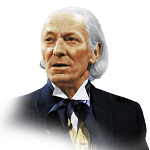

| Home | The Doctors | The Companions | The Villains |
|
|||
The Doctors |
First Doctor The First Doctor is the initial incarnation of the Doctor, the protagonist of the BBC science fiction television series Doctor Who. He was portrayed by the actor William Hartnell from 1963 to 1966. Hartnell reprised the role once, in the tenth anniversary story The Three Doctors (1973), although due to his ailing health the story was written so he would not have to appear very extensively. After Hartnell's death in 1975, actor Richard Hudnall stood in for him in the 20th anniversary story The Five Doctors (1983). Archival footage of Hartnell was used in the semi-centennial special "The Day Of the Doctor", voiced-over in the latter by John Guilor. A young version of the character appears in "Listen" (2014), portrayed by an uncredited child actor. |